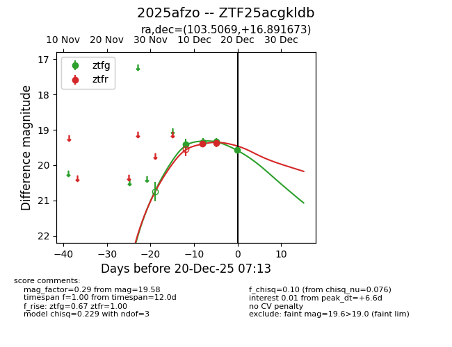
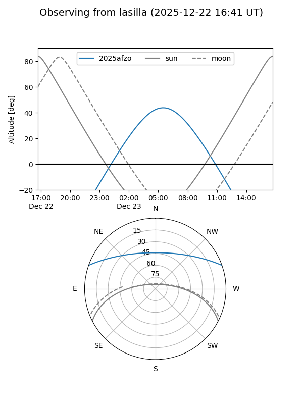
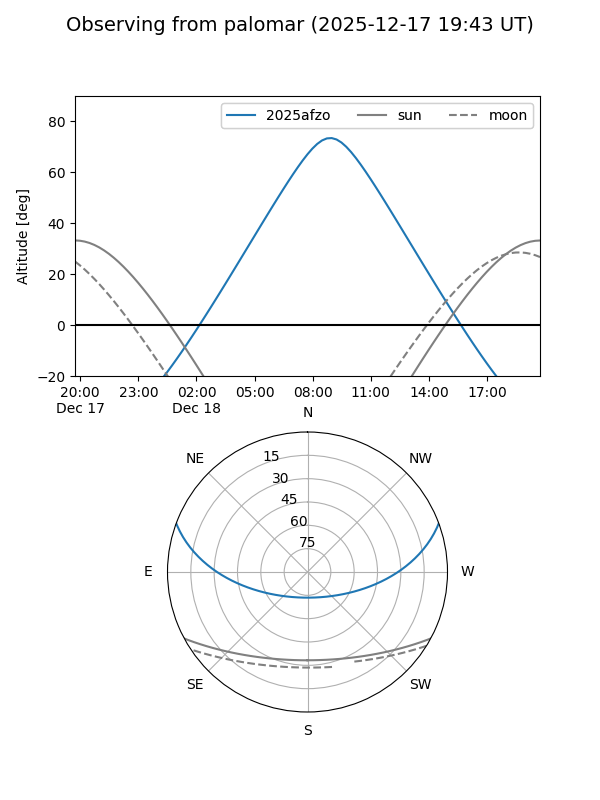
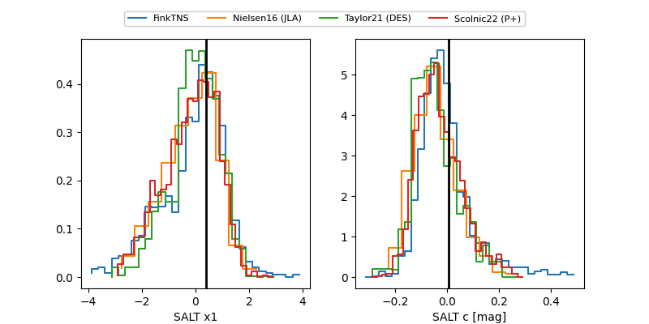

2025afzo
Target 2025afzo at 2025-12-22 16:36
Aliases and brokers:
FINK: fink-portal.org/ZTF25acgkldb
Lasair: lasair-ztf.lsst.ac.uk/objects/ZTF25acgkldb
ALeRCE: alerce.online/object/ZTF25acgkldb
TNS: wis-tns.org/object/2025afzo
YSE: ziggy.ucolick.org/yse/transient_detail/2025afzo
alt names
ZTF25acgkldb (ztf,fink_ztf)
2025afzo (tns,yse)
Coordinates:
equatorial (ra, dec) = 103.5069,+16.89167
equatorial (HMS+DMS) = 06:54:01.65,+16:53:30.02
galactic (l, b) = (198.0831,+8.17020)
Flags:
Photometry:
last ztfg=19.56, ztfr=19.49
5 ztfg, 3 ztfr detections
Lightcurve

Visibility


Additional plots
